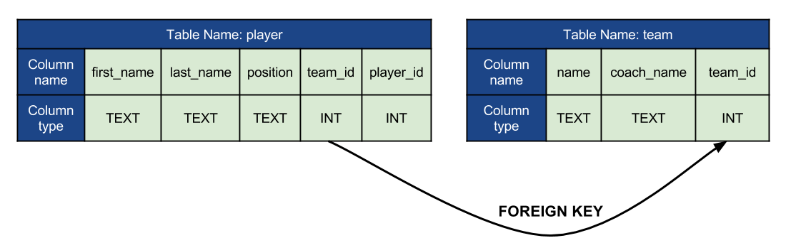
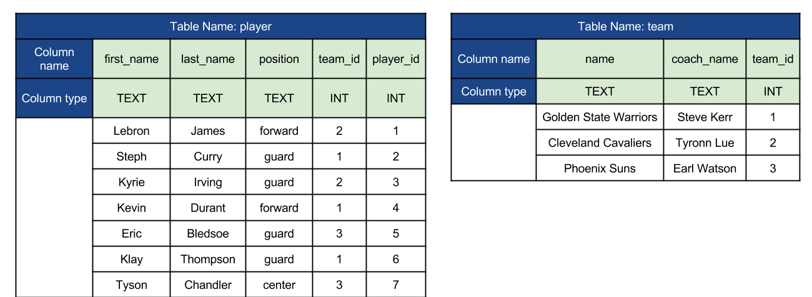

This assignment is all SQL. You should only use SQL features that we have discussed up to this point. If you have questions about whether or not a particular feature can/should be used, ask the instructors!
When grading your assignments, each SQL query will be tested with SQLite version 3, so make sure to test on this! We will be testing on Mac, but the functionality should be the same on a PC.
All of your SQL code should be well-formatted and easy for the graders to read. Your solution file should have a header comment with the following format:
--
-- Author: Student Name
-- Description:
-- A short description of what this program / script / set of functions does!
--
In this problem, you will be writing a set of SQL statements that create tables, populate tables, and query tables.
In particular, the database will be modeling NBA players and their association with teams.
All of your SQL should be put into a single file names asg10.sql.
Put a comment of the form -- Problem N above the SQL for each problem.
Problem 3 has several sub-problems, so make sure to label those clearly with comments too.
Note that each of these problems builds off of the previous ones, so an incorrect solution to one part could effect your grade on another! Also, once you have written all of your solutions, make sure they can all be run in sequence without any errors.
In this problem, you are to write a sequence of CREATE SQL statements to build the structure of the database.
You will create two tables, and one will have a column that is a FOREIGN KEY referencing a column from another table.
Also make sure that player_id is the PRIMARY KEY of the player table, and team_id is the PRIMARY KEY of the team table.
The structure should be as follows:

In all, your solution just be two CREATE SQL statements.
In this problem, you will write a sequence of INSERT statements to populate the tables you just created.
You should insert a total of 10 rows (7 into player and 3 into team).
The data should be as follows:

Notice that the team_id in the player table maps to a valid team_id in the team table.
In all, you should write 10 INSERT statements.
Reminder: You may need to run PRAGMA foreign_keys = ON; in sqlite3 to make sure the FOREIGN KEY works correctly.
In this problem, you will write a sequence of SELECT statements that return various results.
In all, you will write 4 individual SELECT queries, each of which will be worth 10 points.
For each, the correct results are shown below.
Your query for each part should match the results.
Get the last name and first name (last name first) of all rows from player.
The final result should look exactly like:
James|Lebron
Curry|Steph
Irving|Kyrie
Durant|Kevin
Bledsoe|Eric
Thompson|Klay
Chandler|Tyson
Get the last name and player id (in that order) from player where the player_id is greater than 3.
The final result should look exactly like:
Durant|4
Bledsoe|5
Thompson|6
Chandler|7
Get the first name, last name, and position (in that order) from player where position is guard.
The final result should look exactly like:
Steph|Curry|guard
Kyrie|Irving|guard
Eric|Bledsoe|guard
Klay|Thompson|guard
Get all columns from team where the coach’s name is “Steve Kerr”.
The final result should look exactly like:
Golden State Warriors|Steve Kerr|1
Write a sequence of DELETE statements that deletes the following rows from the tables:
teamplayerplayerBefore these items are deleted, selecting all of the rows from each table should looks like:
sqlite> SELECT * FROM player;
Lebron|James|forward|2|1
Steph|Curry|guard|1|2
Kyrie|Irving|guard|2|3
Kevin|Durant|forward|1|4
Eric|Bledsoe|guard|3|5
Klay|Thompson|guard|1|6
Tyson|Chandler|center|3|7
sqlite> SELECT * FROM team;
Golden State Warriors|Steve Kerr|1
Cleveland Cavaliers|Tyronn Lue|2
Phoenix Suns|Earl Watson|3
After, it should look like:
sqlite> SELECT * FROM player;
Steph|Curry|guard|1|2
Kevin|Durant|forward|1|4
Eric|Bledsoe|guard|3|5
Klay|Thompson|guard|1|6
Tyson|Chandler|center|3|7
sqlite> SELECT * FROM team;
Golden State Warriors|Steve Kerr|1
Phoenix Suns|Earl Watson|3
Some of the problems in this assignment requires printing out precise text. We will only take minimal points off for very minor differences (for example, minor character spacing issues). However, we will take points off for any non-trivial differences, so try to be as precise as you can!
This problem will be graded out of 100 points.
This was assigned on Friday, March 31, 2017. It is due Friday, April 6, 2017, at 12:15pm (before class).
Turn-in instructions:
.sql file in a directory named netid-assignment-10 where netid is your netid. Make sure only the .sql file(s) exist in this directory, no others.netid-assignment-10 directory. The result should be named netid-assignment-10.zip.
There are instructions online for how to do this with a Mac and how to do this with a PC.
Make sure to zip the directory, not the file(s) individually!netid-assignment-10.zip to the assignment-10 D2L dropbox.Following these turn-in instructions closely is very important, because our grading scripts will depend on some of the details. You may lose points if these instructions are not followed precisely!